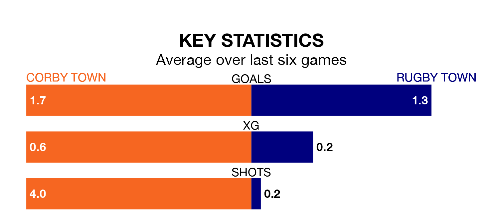

Rugby Town make the journey to Steel Park to play Corby Town on Saturday looking to pick up points to end their three-game losing streak.
Rugby's struggles have left them with just three points from their last six Northern Premier League – Division One Midlands matches, while their opponents have earned five from a possible 18.
With 48 goals in 22 games so far this season, Corby are the league's joint-second-highest scorers with 2.2 goals per game. And they are conceding at an average rate, letting in 34 goals at a rate of 1.5 per game.
Rugby, meanwhile, are below average scorers, with 1.1 goals per game, compared to a league average of 1.5. They have conceded 2.3 goals per game.
Rugby Town are 19th in the table after 23 games, of which they have won five and drawn one, earning 16 points.
Corby Town are eight places ahead of the away side in 11th, with eight wins and five draws putting them on 29 points.
Corby's last match was on January 6, a 2-2 draw against Coleshill Town.
Rugby lost 1-0 against Spalding United last time out, on Tuesday.
Updated: 10:50, 10/01/24